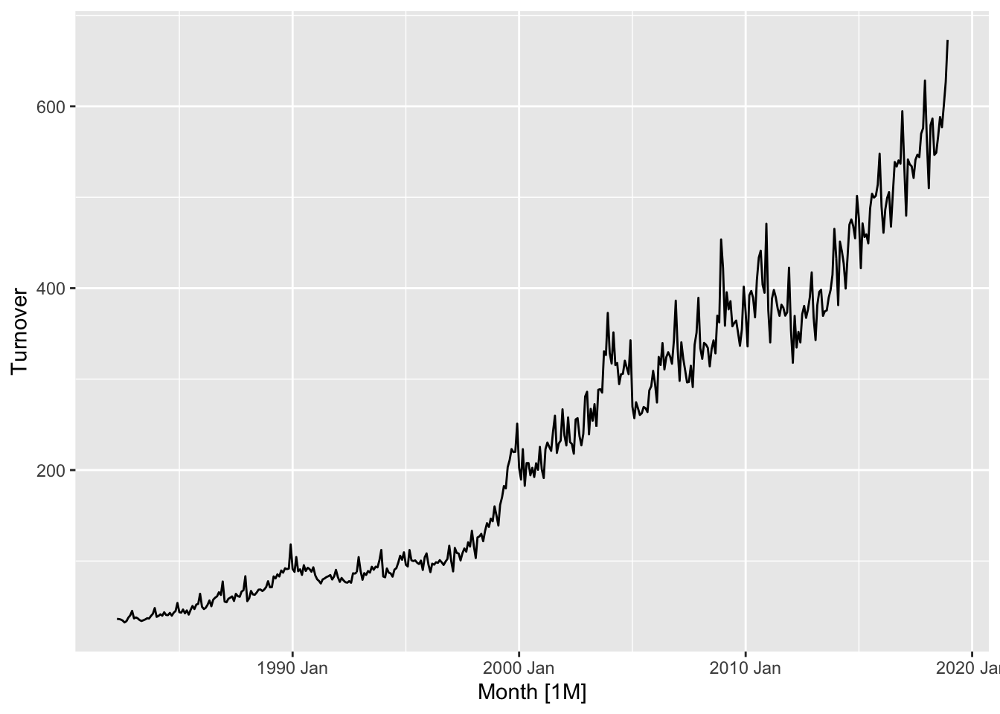

Package 'Sim.DiffProc', version 4.8
browseVignettes('Sim.DiffProc') for more informations.
mu=1;sigma=0.5;theta=2 x0=0;y0=0;init=c(x0,y0)f <-expression(1/mu*(theta-x), x) g <-expression(sqrt(sigma),0)mod2d <-snssde2d(drift=f,diffusion=g,M=500,Dt=0.015,x0=c(x=0,y=0))## true values of first and second moment at time 10Ex <-function(t) theta+(x0-theta)*exp(-t/mu)Vx <-function(t) 0.5*sigma*mu *(1-exp(-2*(t/mu)))Ey <-function(t) y0+theta*t+(x0-theta)*mu*(1-exp(-t/mu))Vy <-function(t) sigma*mu^3*((t/mu)-2*(1-exp(-t/mu))+0.5*(1-exp(-2*(t/mu))))covxy <-function(t) 0.5*sigma*mu^2*(1-2*exp(-t/mu)+exp(-2*(t/mu)))tvalue =list(m1=Ex(15),m2=Ey(15),S1=Vx(15),S2=Vy(15),C12=covxy(15))## function of the statistic(s) of interest.sde.fun2d <-function(data, i){ d <- data[i,]return(c(mean(d$x),mean(d$y),var(d$x),var(d$y),cov(d$x,d$y)))}## Parallel Monte-Carlo of 'OUI' at time 10mcm.mod2d =MCM.sde(mod2d,statistic=sde.fun2d,time=15,R=10,exact=tvalue,parallel="snow",ncpus=2)mcm.mod2d$MC
# Plot one time seriesaus_retail %>%filter(`Series ID`=="A3349640L") %>%autoplot(Turnover)

# Produce some forecastsaus_retail %>%filter(`Series ID`=="A3349640L") %>%model(ETS(Turnover)) %>%forecast(h ="2 years")
# A fable: 24 x 6 [1M]
# Key: State, Industry, .model [1]
State Industry .model Month Turnover .mean
<chr> <chr> <chr> <mth> <dist> <dbl>
1 Victoria Cafes, restaurants and catering … ETS(T… 2019 Jan N(608, 978) 608.
2 Victoria Cafes, restaurants and catering … ETS(T… 2019 Feb N(551, 1129) 551.
3 Victoria Cafes, restaurants and catering … ETS(T… 2019 Mar N(622, 1856) 622.
4 Victoria Cafes, restaurants and catering … ETS(T… 2019 Apr N(609, 2190) 609.
5 Victoria Cafes, restaurants and catering … ETS(T… 2019 May N(602, 2539) 602.
6 Victoria Cafes, restaurants and catering … ETS(T… 2019 Jun N(577, 2704) 577.
7 Victoria Cafes, restaurants and catering … ETS(T… 2019 Jul N(607, 3413) 607.
8 Victoria Cafes, restaurants and catering … ETS(T… 2019 Aug N(626, 4072) 626.
9 Victoria Cafes, restaurants and catering … ETS(T… 2019 Sep N(614, 4358) 614.
10 Victoria Cafes, restaurants and catering … ETS(T… 2019 Oct N(624, 4942) 624.
# … with 14 more rows